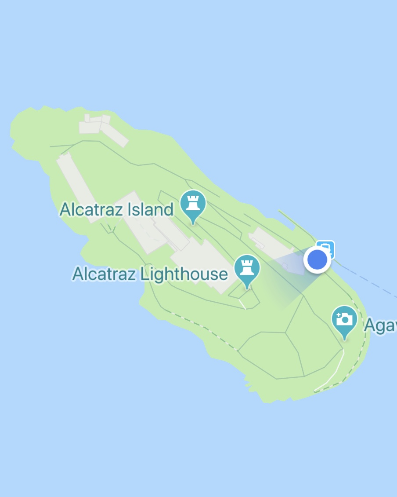
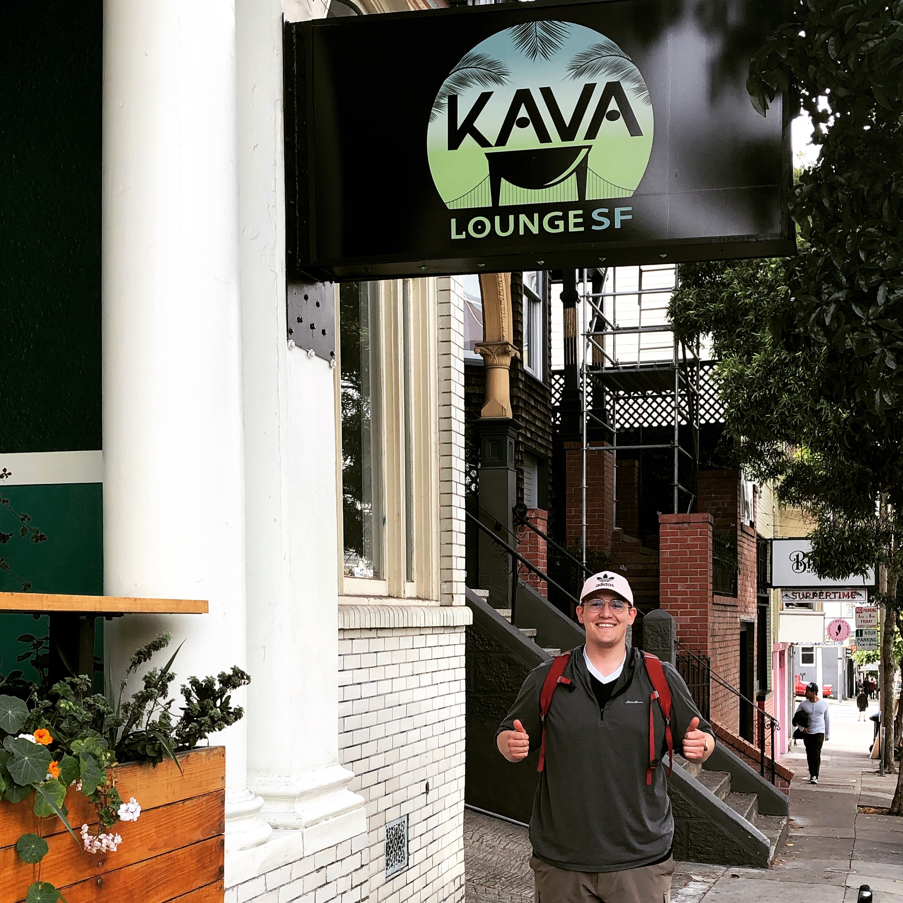
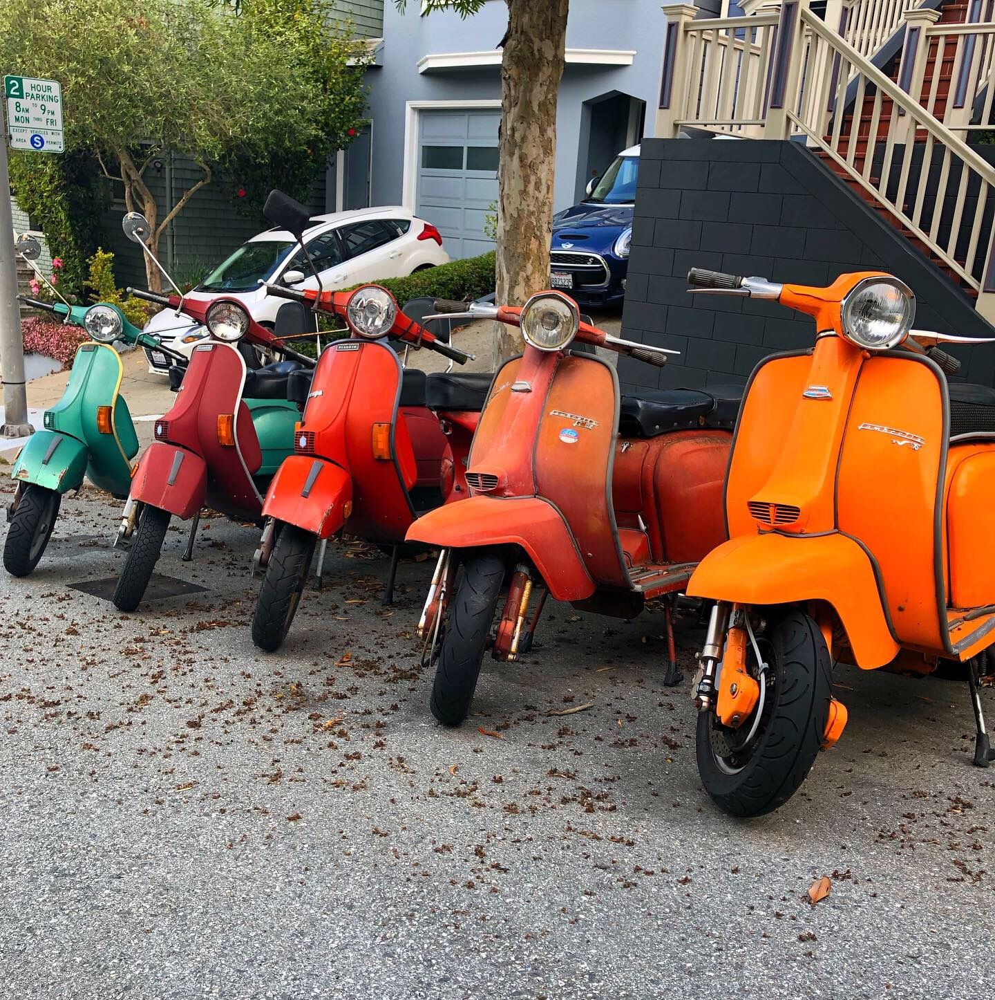
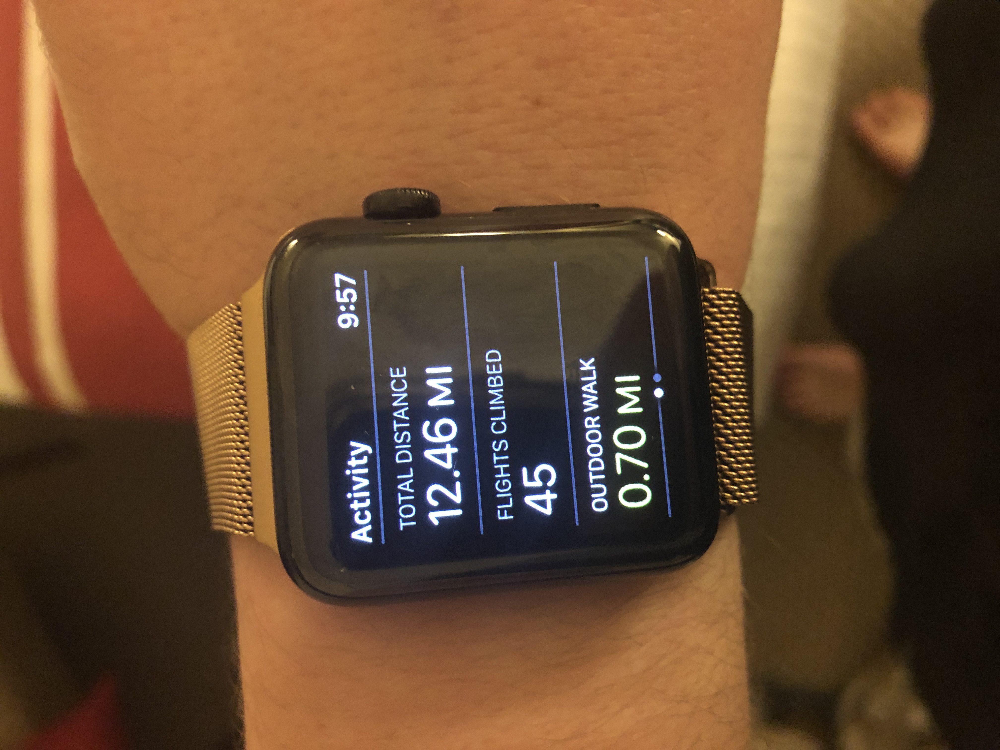

Alkatraz
A little spooky
I was honestly afraid to go to Alcatraz. As a fan of the show Ghost Adventures, the idea of going to an abandoned prison felt way too spooky for me. Walking through the prison was a bit eery, but luckily I didn’t encounter any paranormal entities. I wasn’t all that interested in the guided tour, but it was interesting to learn that most of the prisoners were there for theft and robbery. All this time I thought Alcatraz was reserved for murderers and psychopaths. Outside the prison had some beautiful sights. The island is a bird sanctuary now, so the smell of bird droppings filled the air.



Lighthouse for the Blind
A great start
After Alcatraz, we went to the Lighthouse for the Blind. This was a great way to kick off the Study Away Trip. During the tour, the architecture really got me excited because it demonstrated what impressive achievements can be made when accessibility and usability are the foundation of the design process. The building included slots to park a walking stick, handrails designed for descending, tactile artwork, and many other considerations to make the building accessible and usable for staff and students. I was grateful to work with blind and visually impaired students. The activity solidified the importance of accessible design for me.


Kava Kava
The journey
It was time to embark on a journey to kava. What’s kava you ask? Only the best, worst tasting, relaxing beverage! It’s actually a dream of mine to open a kava bar on campus. Many miles we trekked, but finally, I got to sip that bitter muddy water. On the way, we saw the houses from the show Full House and a dog park. At the end of the day, we ate at Mozzeria. Here I learned how to say “water” and “thank you” in ASL (American Sign Language) because the entire staff is a part of the Deaf Community. The food was amazing! In total, I walked a little over 12 miles in San Francisco. It was a great workout and a full day of memorable experiences.


